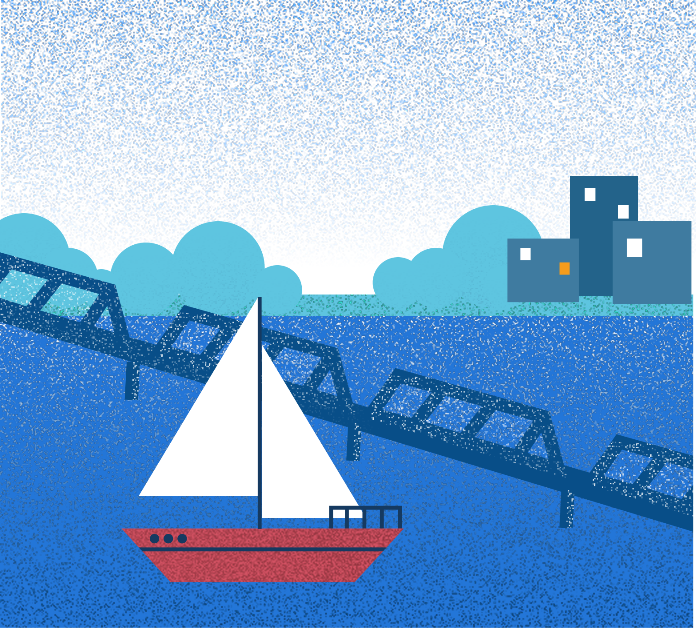
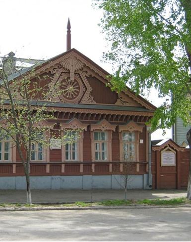
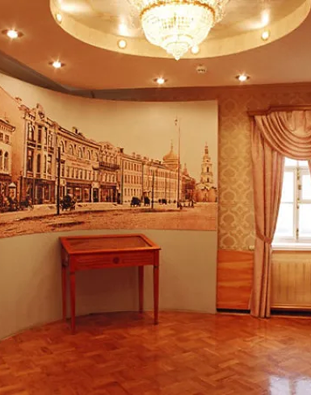
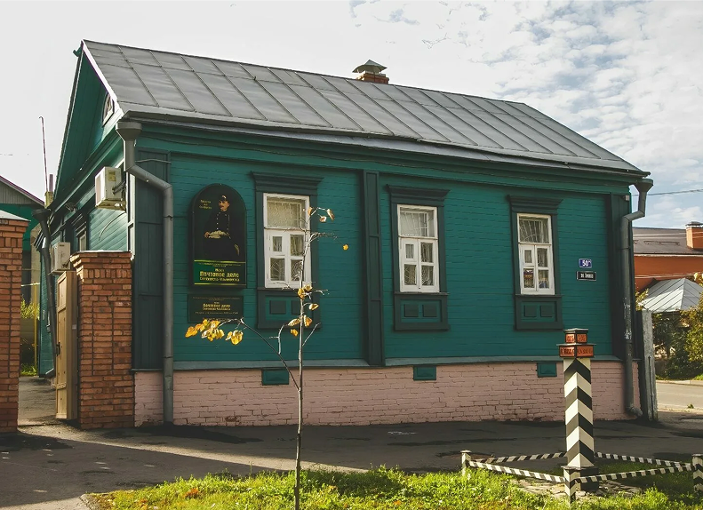
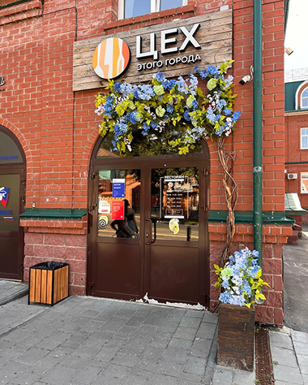
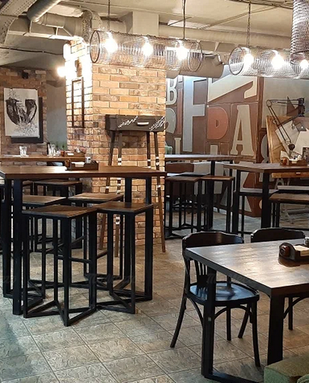
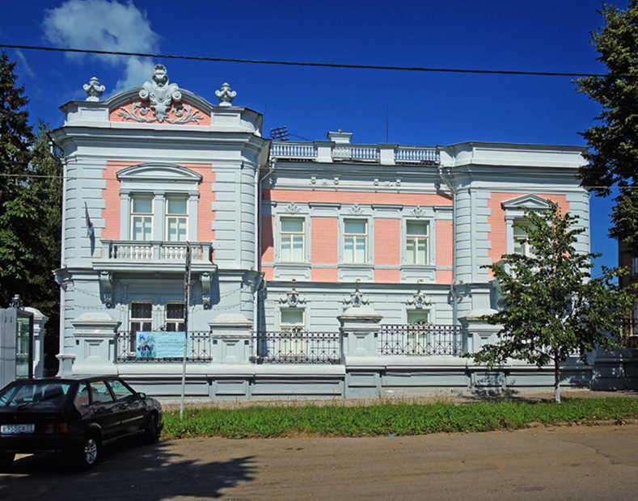
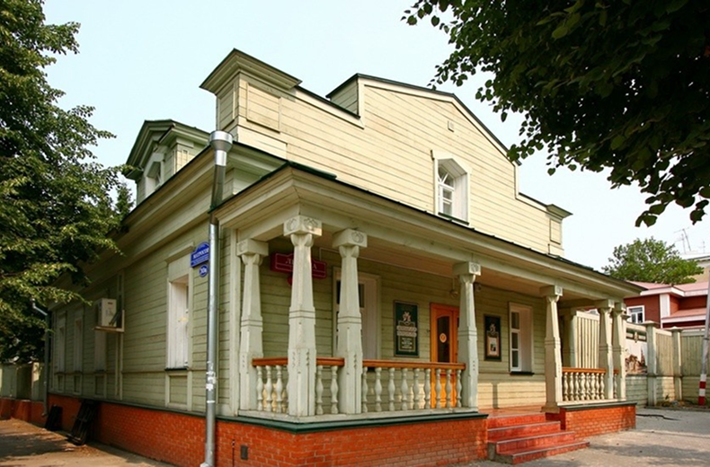
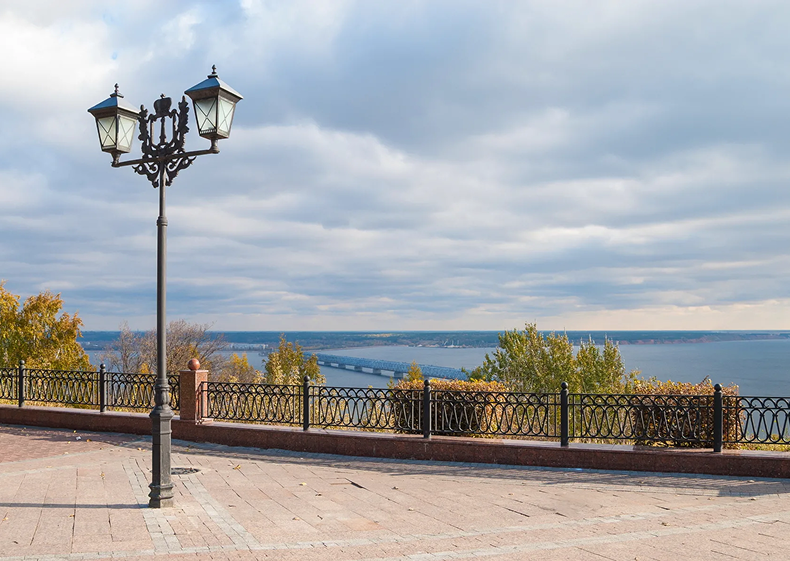

Дворянин на Волге
Исторический маршрут по дворянскому Симбирску
Дом семьи Ульяновых
Набережная Волги
Пешеходный маршрут-рекомендация по историческому центру Ульяновска. Он знакомит с жизнью симбирского дворянства XIX века: её бытом, укладом, памятниками культуры и традициями Волги. Маршрут проходит по основным зданиям и музеям, связанным с дворянскими семьями, и завершается у реки — главного символа города.

1. Музей «Градостроительство и архитектура Симбирска-Ульяновска»
Адрес: ул. Льва Толстого, 4. Часы работы: 10:00–18:00 (выходной — понедельник)


Этот деревянный дом — часть городской истории XIX века, где в 1876–1878 годах жила семья Ульяновых. Здание входит в комплекс музея городской архитектуры, который располагает предметами интерьера прошлых лет и историческими документами, воссоздавая атмосферу Симбирска.
В экспозиции можно увидеть элементы декора и архитектурные чертежи зданий городской среды, узнать, как симбирские архитекторы следовали классическим стилям.
2. Музей «Почтовое дело Симбирска-Ульяновска»
Адрес: ул. Ленина, 5б. Часы работы: 10:00–18:00 (10:00–16:00 — суббота, выходной — понедельник)
Небольшой музей в старинном здании рассказывает о развитии почтовой службы в Симбирске с XIX века до наших дней. В основе экспозиции — предметы труда почтмейстера, письма, марки и документы, относящиеся к работе почтовых трактов, через которые Симбирск связывался с остальной Россией.
Здесь можно узнать об истории почтовой гоньбы, телеграфе и телефоне в губернии, а также попробовать воссоздать атмосферу провинциального почтамта XIX века.

3. Обед: Цех
Адрес: ул. Ленина, 52. Режим работы: вс–пт 11:00–23:00, сб 12:00–00:00

Цех — самый популярный ресторан в Ульяновске. «Цех» — это стильная кофе-атмосфера и создание из старого завода в центре города. Современное меню включает блюда разных кухонь мира: здесь можно спокойно выбрать что угодно. Ресторан обладает уютом и комфортом со стороны авторских блюд, которые восстановили долгую историю Цеха.
В основе меню — авторская и европейская кухня: паста, бургеры, стейки, салаты, горячие блюда. Отличное место для обеда в середине прогулки.

4. Дом Х.Г. Штемпеля
Адрес: ул. Льва Толстого, 81. Часы работы: 12:00–19:30

Особняк Карла Штемпеля — яркий архитектурный памятник симбирского модерна начала XX века. Сейчас это художественный музей. До приобретения Провиантским ведомством особняк отличался культурным подходом к деталям и давал простор для декоративной и текстурной роботы.
В экспозиции — работы симбирских художников, предметы дворянского быта, элементы интерьера XIX–XX веков и временные выставки современного искусства.
5. Музей «Симбирское купечество»
Адрес: ул. Ленина, 75а. Часы работы: 10:00–18:00 (выходной — понедельник)
Экспозиция музея рассказывает о купеческом сословии города с XIX до начала XX века. Здесь можно всегда увидеть: деловые документы, фотографии и памятники быта, освещающие повседневную жизнь симбирских купцов, как они сами формировали городскую среду в XIX–XX веках.
Отдельный зал посвящён торговле на Волге и ярмарочной культуре Симбирска.

6. Набережная Волги
Адрес: Набережная реки Волги

Финальная точка — прогулка по набережной великой Волги. Это место давно стало символом уют и равновесного Ульяновска, где можно остановиться и почувствовать масштаб реки. На набережной расположены исторические здания, смотровые площадки, где виден закат, и скульптурные объекты.
Отсюда видны оба уникальных моста Ульяновска. Набережная — идеальное место, чтобы закончить день, глядя на закат над рекой и размышляя о городе семи ветров.